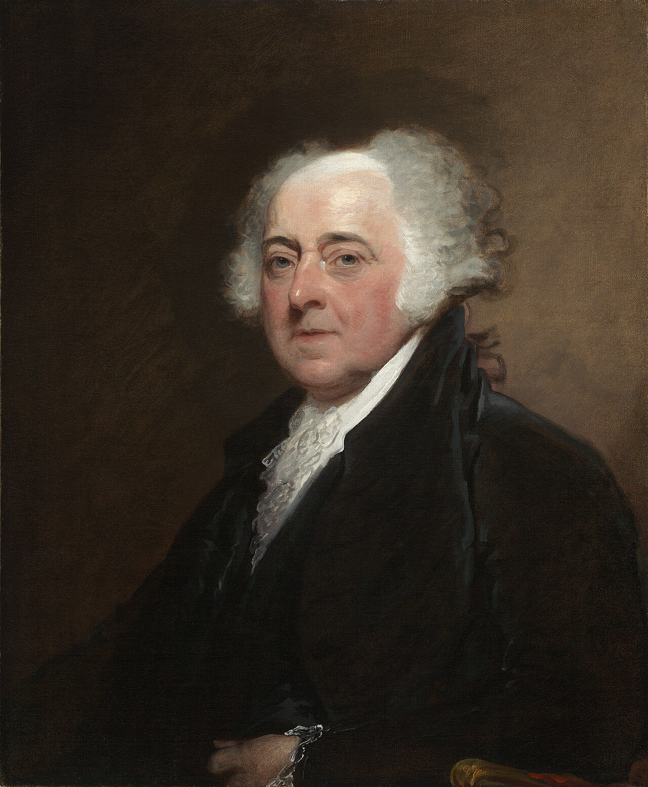

Directions: Read the background and the two records, then answer the questions.

Background. In the summer of 1798, during an undeclared naval war with France, the Federalist Congress passed the Sedition Act and President John Adams signed it. Section 2 punished any person who would write, print, utter or publish any false, scandalous and malicious writing against the government of the United States, either house of Congress, or the president, with a fine not exceeding two thousand dollars and imprisonment not exceeding two years. Jefferson, then vice president, secretly drafted the Kentucky Resolutions in answer. His draft argued that the states had constituted a general government by compact, delegating certain definite powers and reserving the rest, and that when it assumed undelegated powers, its acts were unauthoritative, void, and of no force. Kentucky's second set, in 1799, named nullification as the rightful remedy. Ten states rejected the resolutions, and no state joined Kentucky or Virginia.
1. State what the Sedition Act punished and give its maximum fine and prison term.
2. State Jefferson's compact claim in your own words: who created the general government, and what happens to its acts when it assumes undelegated powers?
3. Name the remedy Kentucky's 1799 resolutions called rightful, and define it from the lesson's vocabulary.
4. The resolutions persuaded almost no other state in 1799, yet the party that wrote them won the presidency in 1800. Explain, using the election's numbers, how the argument against the acts finally prevailed.
1. State what the Sedition Act punished, and its maximum penalties. The act punished writing, printing, uttering, or publishing false, scandalous, and malicious writing against the government of the United States, either house of Congress, or the president, with intent to defame or stir up sedition. The maximum penalty was a fine of two thousand dollars and imprisonment of two years. (Blueprint 3)
2. State Jefferson's compact claim. Jefferson argued that the several states, by a compact under the title of a Constitution, created the general government for special purposes and delegated to it certain definite powers, reserving the rest to themselves. When the general government assumes undelegated powers, its acts are unauthoritative, void, and of no force, and the government itself is not the exclusive or final judge of its own powers. (Blueprint 3)
3. Name and define the 1799 remedy. The remedy was nullification, the claim, drawn from the Kentucky Resolutions, that a state may declare a federal law void and of no force inside its borders. Kentucky's 1799 resolutions called it the rightful remedy where powers were assumed that had not been delegated. (Blueprint 3 and 4)
4. How did the argument finally prevail? It prevailed at the ballot box rather than in the state legislatures. Ten states had rejected the resolutions and none had joined them, but the election of 1800 defeated the Federalists who had passed the acts. Jefferson and Burr tied at seventy three electoral votes, the House deadlocked through thirty five ballots and chose Jefferson on the thirty sixth, the Sedition Act expired on March 3, 1801, and Adams surrendered the government to the party his prosecutors had jailed. The Twelfth Amendment, ratified in 1804, then separated the presidential and vice presidential ballots so the tie could not recur. (Blueprint 4)
Teacher note. This check is formative. Question 2 is the entry diagnostic: students who write that Jefferson wanted the states to ignore any law they disliked have lost the claim's limit, which is undelegated powers only. Question 4 predicts success on the activity verdict, because it requires students to hold the doctrine's failure in 1799 and the election's success in 1801 in one answer.